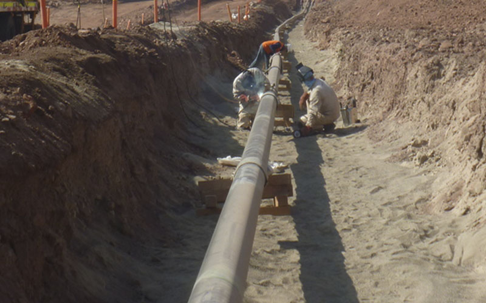
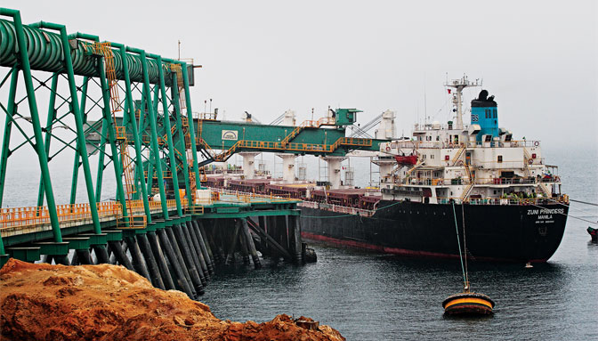

MIERODUCTO Y COMERCIALIZACIÓN
MINERODUCTO
Es el traslado del mineral con agua ayudado por 1 bomba, este mineroducto cuenta con sistemas de control, sistema de
tuberías y bombas, estaciones de bombeo y válvulas, tanques de almacenamiento y postes de información. Lo cual garantiza
un traslado eficiente del mineral y poder actuar frente a un posible derrame o fuga.

PROCESO DE PUERTO
Una vez el mineral terminado el viaje del mineral por el mineroducto este llega al puerto donde tenemos que hacer el
filtrado para separar el concentrado del agua, luego procedemos a almacenar el concentrado para finalmente proceder a embarcarlo.

COMERCIALIZACIÓN
Viene a ser la oferta y demanda que tiene el mineral o concentrado en el mercado, se lleva a cabo tomando un conjunto de
acciones para cumplir con el objetivo. Cabe añadir que los principales países de exportación son: China, Australia,
Canadá, Brasil, entre otros.